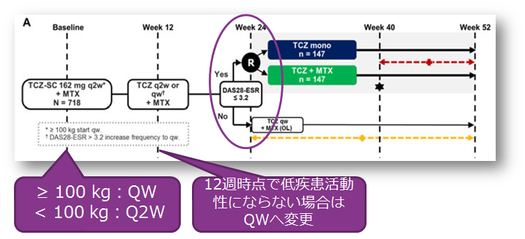
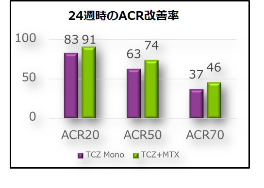

QWの投与が可能になることでACR20は9割にまで上昇（COMP-ACT）
- ●TCZ-SCとMTX併用で低疾患活動性を達成した患者において、併用療法継続群に対する、MTX中止群の非劣性を検証する試験
- ●100㎏以上、12週時低疾患活動性未満はQWへ変更、24週時にランダム化し試験開始



Q2Wで効果不十分な場合にQWを行うというオプションにより、アクテムラはさらに高い治療成績が期待できるようになった
Q2Wで効果不十分な場合にQWを行うというオプションにより、アクテムラはさらに高い治療成績が期待できるようになった